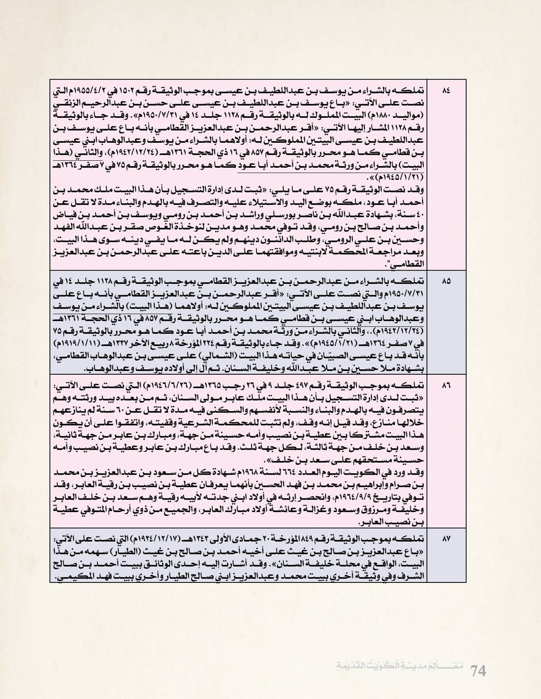

In 1919 Eissa Al-Subayyan sold his northern house to Eissa bin Abdulwahab Al-Qatami, witnessed by Mulla Hussain bin Mulla Abdullah and Khalifa Al-Sannan. It passed to Eissa's sons Yousef and Abdulwahab. In December 1942 they sold it to their cousin Abdulrahman bin Abdulaziz Al-Qatami. In January 1945 Abdulrahman also bought the house next door from the heirs of Mohammed Abu Oud, after the court allowed it to be sold for his debts. In July 1950 Abdulrahman sold both houses to Yousef bin Abdullatif bin Eissa.
Why it matters
It shows Eissa owning his own house in Fereej Ibn Khamis in 1919, and how the house stayed in the family for more than thirty years, going from Eissa to his sons and then to his nephew Abdulrahman.
Who is meant
The deeds name Eissa bin Abdulwahab Al-Qatami, his sons Yousef and Abdulwahab, and Abdulrahman bin Abdulaziz Al-Qatami. All four are in our tree, and none of these names belongs to the other Qatami family.
Page copies

Ma'alim part 4, page 74, plots 84 and 85
Original text
الوثيقة رقم ٢٢٤ المؤرخة ٨ ربيع الآخر ١٣٣٧هـ (١٩١٩/١/١١م): «بأنه قد باع عيسى الصبيّان في حياته هذا البيت (الشمالي) على عيسى بن عبدالوهاب القطامي، بشهادة ملا حسين بن ملا عبدالله وخليفة السنان». ثم آل إلى أولاده يوسف وعبدالوهاب.
الوثيقة رقم ١١٢٨ جلد ١٤ في ١٩٥٠/٧/٣١م: «أقر عبدالرحمن بن عبدالعزيز القطامي بأنه باع على يوسف بن عبداللطيف بن عيسى البيتين المملوكين له: أولاهما (هذا البيت) بالشراء من يوسف وعبدالوهاب ابني عيسى بن قطامي كما هو محرر بالوثيقة رقم ٨٥٧ في ١٦ ذي الحجة ١٣٦١هـ (١٩٤٢/١٢/٢٤م)، والثاني بالشراء من ورثة محمد بن أحمد أبا عود كما هو محرر بالوثيقة رقم ٧٥ في ٧ صفر ١٣٦٤هـ (١٩٤٥/١/٢١م)».
الوثيقة رقم ٧٥: «ثبت لدى إدارة التسجيل بأن هذا البيت ملك محمد بن أحمد أبا عود... وقد توفي محمد، وهو مدين لنوخذة الغوص صقر بن عبدالله الفهد وحسين بن صالح بن علي الرومي، وطلب الدائنون دينهم ولم يكن له ما يفي دينه سوى هذا البيت، وبعد مراجعة المحكمة لابنتيه وموافقتهما على الدين باعته على عبدالرحمن بن عبدالعزيز القطامي».
English translation
Document 224, dated 8 Rabi Al-Akhar 1337 (11 January 1919): "Eissa Al-Subayyan, in his lifetime, sold this (northern) house to Eissa bin Abdulwahab Al-Qatami, witnessed by Mulla Hussain bin Mulla Abdullah and Khalifa Al-Sannan." It then passed to his sons Yousef and Abdulwahab.
Document 1128, volume 14, 31 July 1950: "Abdulrahman bin Abdulaziz Al-Qatami declared that he sold to Yousef bin Abdullatif bin Eissa the two houses he owned: the first (this house) bought from Yousef and Abdulwahab, sons of Eissa bin Qatami, as recorded in document 857 of 16 Dhul Hijja 1361 (24 December 1942), and the second bought from the heirs of Mohammed bin Ahmad Abu Oud, as recorded in document 75 of 7 Safar 1364 (21 January 1945)."
Document 75: "It was established before the Registration Department that this house belonged to Mohammed bin Ahmad Abu Oud... Mohammed died owing money to the pearl diving captain Saqer bin Abdullah Al-Fahad and to Hussain bin Saleh bin Ali Al-Roumi. The creditors asked for their debt and he had nothing to pay it but this house. After the court consulted his two daughters and they agreed to the debt, it sold the house to Abdulrahman bin Abdulaziz Al-Qatami."
Notes
Ma'alim part 4, book page 74, plots 84 and 85 in Fereej Ibn Khamis. The book quotes the deeds from the Registration Department records; we have not seen the original deeds themselves.
Others named
Eissa Al-SubayyanMulla Hussain bin Mulla AbdullahKhalifa Al-SannanMohammed bin Ahmad Abu OudSaqer bin Abdullah Al-FahadHussain bin Saleh Al-RoumiYousef bin Abdullatif bin Eissa
Sources
Ma'alim Madinat Al-Kuwait Al-Qadima (Landmarks of Old Kuwait Town), Center for Research and Kuwaiti Studies, 2024, part 4, page 74. A copy is saved in the family Drive.
Archive reference
Ma'alim part 4, p. 74 · الوثائق ٢٢٤ و٨٥٧ و٧٥ و١١٢٨
How this text was made: Arabic text as quoted in Ma'alim Madinat Al-Kuwait Al-Qadima. English translation by Claude; please review.